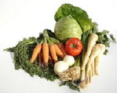

ZDROWA ŻYWNOŚĆ - DLACZEGO WARTO JĄ JEŚĆ
To co jemy ma ogromy wpływ na nasze zdrowie.
Nasze przyzwyczajenia żywieniowe nie zawsze odpowiadają potrzebom naszego organizmu.
Najczęściej jemy szybko i "byle jak". Nie zwracamy uwagi na wartości odżywcze,
jakie nam są potrzebne do prawidłowego rozwoju, a jakie dane produkty nam dostarczają.
Jemy po prostu to, co lubimy. Ale czy to jest zdrowe?
Zdaniem żywieniowców, powinniśmy zwracać większą uwagę na to, co jemy.
Żywić zdrowo powinniśmy się w każdym okresie życia.
PODSTAWOWE ZALECENIA ŻYWIENIOWE ZALECANE PRZEZ
INSTYTUT ŻYWNOŚCI I ŻYWIENIA
1.Jedz regularnie 5 posiłków dziennie. Każdy dzień rozpoczynaj od śniadania.
2.Twoje codzienne pożywienie powinno zawierać różnorodną żywność
pochodzenia roślinnego i zwierzęcego.
3.Spożawaj codziennie produkty zbożowe oraz warzywa i owoce.
Warzywa najlepiej jest jeść na surowo lub krótko gotowane.
4.Dwa razy dziennie spożywaj mleko, biały ser lub jogurty o obniżonej zawartości tłuszczu.
5.Ograniczaj ilość spożywanego tłuszcz. Tłuszcze zwierzęce zastępuj olejami lub oliwą z oliwek.
6.Mięso i jego przetwory jedz w ilościach umiarkowanych dwa lub trzy razy w tygodniu.
Wybieraj mięso chude.
W pozostałe dni jadaj dania z ryb i roślin strączkowych (fasola, groch, soja).
